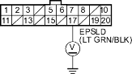
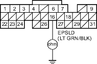
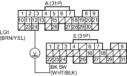

- Measure voltage between EPS control unit terminal No. 17 and the body ground.

Is there battery voltage?
YES |
- Substitute a known-good EPS control unit and recheck. |
NO |
- Go to step 14. |

- Turn the ignition switch OFF.
- Disconnect the ECM/PCM connector E (31P).
- Check for continuity between body ground and ECM/PCM connector terminal E16.

Is there continuity?
YES |
- Repair short in the wire between the ECM/PCM (E16) and the EPS control unit. |
NO |
- Substitute a known-good ECM/PCM and recheck (see page 11-6). If prescribed voltage is now available, replace the original ECM. |
- Check the brake lights.
Are the brake lights on without pressing the brake pedal?
YES |
- Inspect the brake pedal position switch (see page 19-10). |
NO |
- Go to step 2. |
- Press the brake pedal.
Do the brake lights come on?
YES |
- Go to step 3. |
NO |
- Go to step 4. |
- Measure voltage between ECM/PCM connector terminals A24 and E22 with the brake pedal pressed.

Is there battery voltage?
YES |
- The brake pedal position switch signal is OK. |
NO |
- Repair open in the wire between the ECM/PCM (E22) and the brake pedal position switch. |